| Illustration |
Nom |
Habitat naturel |
Fait insolite |
| 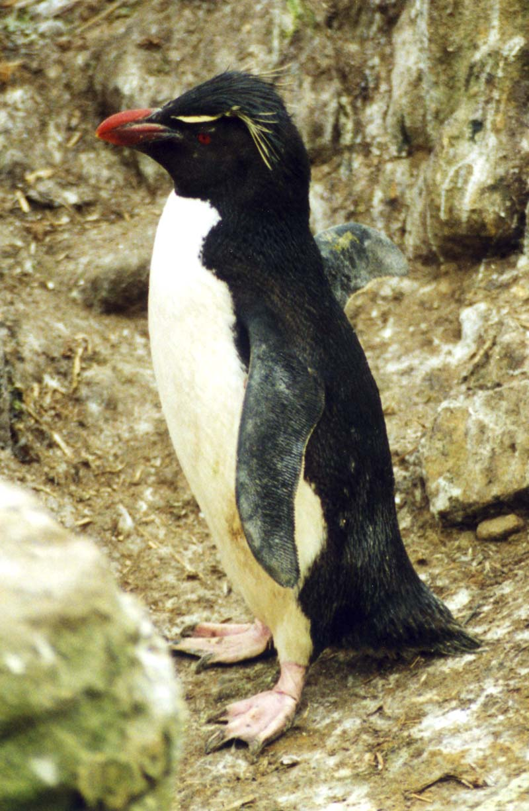 |
Gorfou sauteur
Eudyptes chrysocome
|
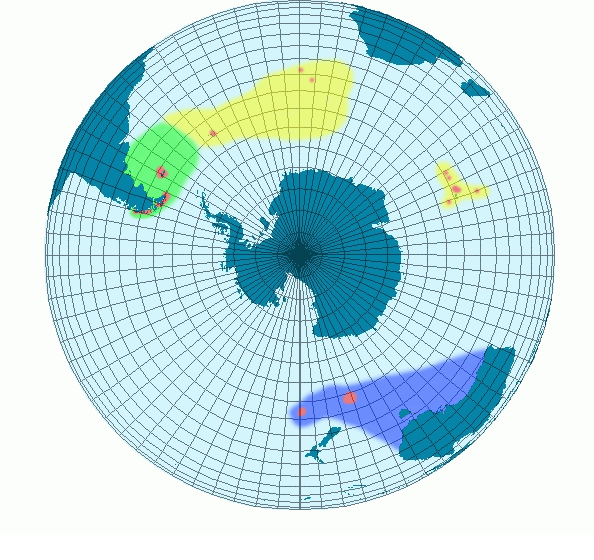 |
Il s'agit du plus petit gorfou, noir et blanc du genre Eudyptes.
Il atteint une longueur de 45 à 58 cm et pèse généralement entre 2 et 3,4 kg.
De plus le gorfou sauteur pocède trois sous espèces (comme l'indiques les couleurs sur la carte).
|
| 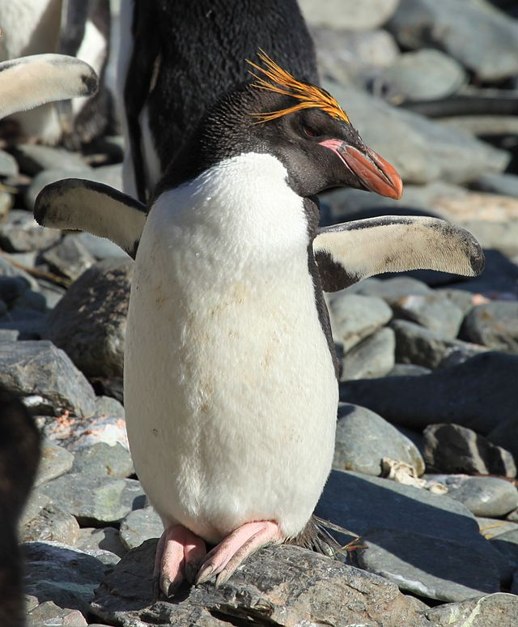 |
Gorfou doré
Eudyptes chrysolophus • Gorfou macaroni
|
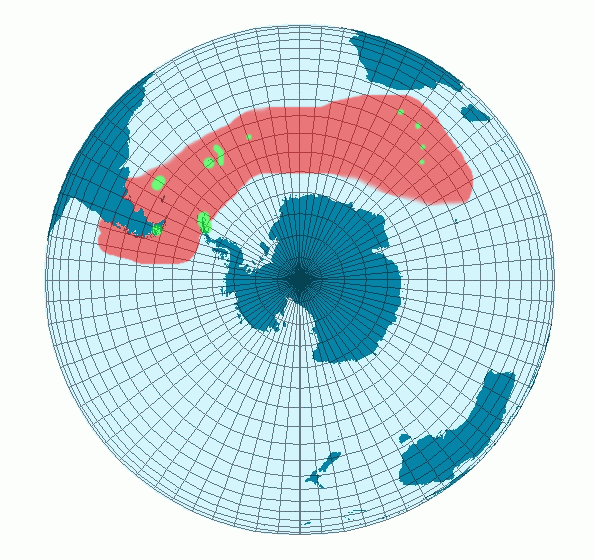 |
Les femelles gorfou doré peuvent commencer à se reproduire vers
l'âge de cinq ans, tandis que les mâles ne se reproduisent généralement
pas avant d'avoir au moins six ans. Les femelles se reproduisent à un
plus jeune âge car la population de mâles est plus nombreuse.
L'excédent de mâles permet aux femelles manchots de sélectionner
des partenaires mâles plus expérimentés dès qu'elles sont physiquement
aptes à se reproduire.
|
| 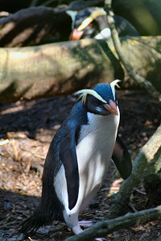 |
Gorfou du Fiordland
Eudyptes pachyrhynchus
|
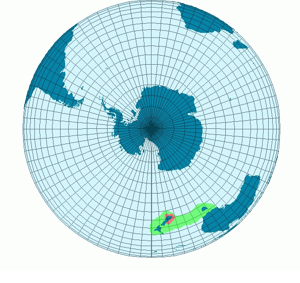 |
Il se reproduit actuellement le long des côtes sud-ouest de l'île du Sud de la Nouvelle-Zélande,
ainsi que sur l'île Stewart/Rakiura et ses îles environnantes.
En raison de sa répartition originelle au-delà de Fiordland,
il est parfois appelé manchot à crête de Nouvelle-Zélande.
|
_large.jpg) |
Gorfou des Snares
Eudyptes robustus
|
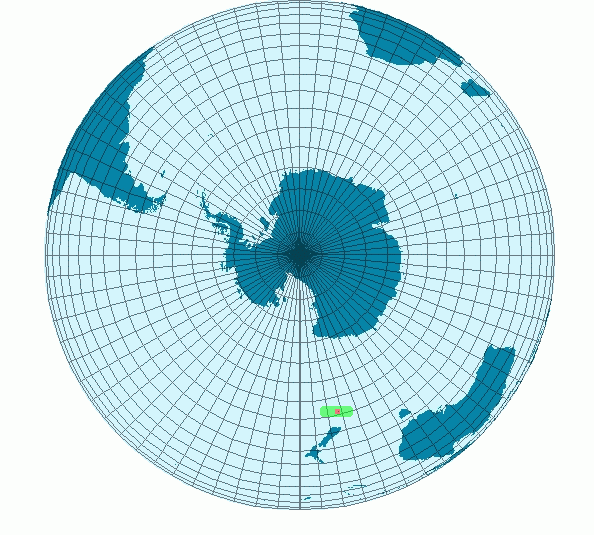 |
Cette espèce niche en colonies dont la taille varie d'environ 10 nids
à environ 1200 nids, sous la couverture forestière ou en terrain découvert.
Les principales colonies se trouvent sur l'île North East;
d'autres colonies sont établies sur l'île Broughton ainsi
que sur la chaîne rocheuse de l'ouest de la Nouvelle-Zélande.
|
| 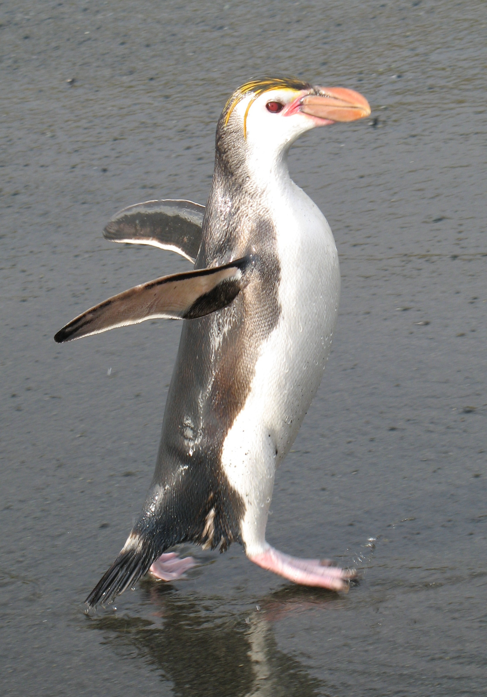 |
Gorfou de Schlegel
Eudyptes schlegeli
|
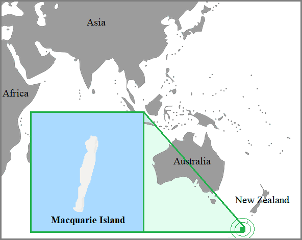 |
Le gorfou de Schlegel niche exclusivement sur l'île Macquarie,
avec quelques couples présents sur les îlots Bishop
et Clerk à proximité de l'île Macquarie, totalisant
environ 1 000 couples. Cette île se trouve dans la partie
la plus méridionale de l'Australie.
|
| 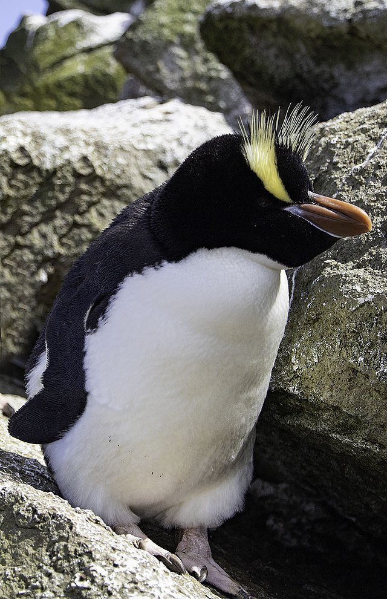 |
Gorfou huppé
Eudyptes sclateri
|
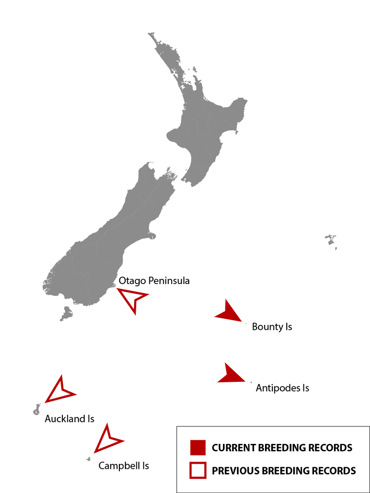 |
On estime que les populations de gorfou huppé ont diminué au cours
des dernières décennies du XXe siècle, et l'Union internationale
pour la conservation de la nature (UICN) les a répertoriées comme étant "en danger".
|